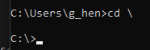
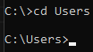
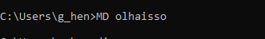
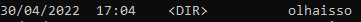
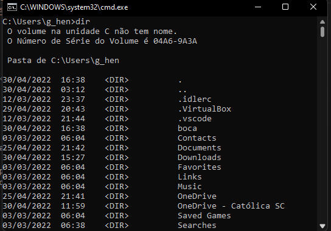

Comandos para navegação e manipulação de pastas e arquivos
Já tendo visto como se abre o prompt do Windows nas "Pastas", veremos agora alguns comandos básicos para a manipulção de pastas e documentos no prompt do Windows.
- cd \ - vai pra raiz Exemplo: 
- cd - entra em um diretório 
- md - cria um diretório  
- rd - remove um diretório
- dir - lista todos os arquivos dentro da pasta 
- cls - limpa o prompt
- copy - Copia um arquivo
- Exemplo: "COPY documento.docx documentos"
- ren - Renomeia uma pasta ou arquivo
- ren boca.exe orelha.txt
- help - mostra alguns comandos ou infromaçãoes relacionadas ao prompt
- del - deleta o diretório
- move - move um arquuivo para uma pasta
- ren boca.exe orelha.txt
- ". ." - muda o diretório para o próximo.
Exemplo: ao invés de escrever: "Cd \Users\g_hen\documentos", você pode escrever:
cd \..\..\documentos